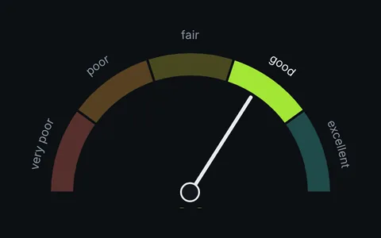
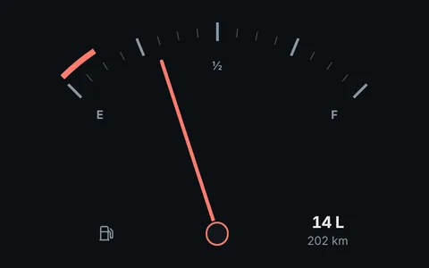

Gauges
A gauge is an arc, some labels and something that points. In Orbit the arc is a ring of <o-arc> bands, the labels are curved text or satellites, and the needle is a .vector on a ring turned with rotate. All of it is HTML you can style and inspect.

180° gaugeFive named zones and a needle on a half circle. 240° gaugeA stepped speedometer: bands light up with the speed.
240° gaugeA stepped speedometer: bands light up with the speed.
Fuel gaugeA 90° dial with E, F and a reserve, in a box cut to fit.
For a gauge with ticks, ranges and a value API already wired, see the Orbit Kit gauge.
Related
- Progress rings: a value without a needle
- Knobs: gauges you can turn
- Arcs and vectors